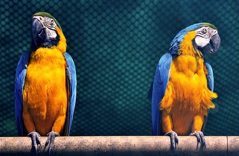
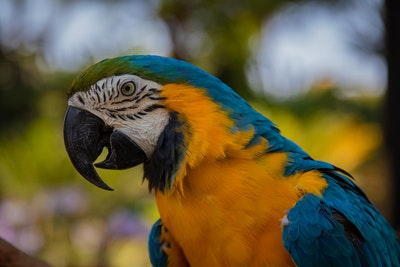

The blue-and-yellow macaw (Ara ararauna), also known as the blue-and-gold macaw, is a large South American parrot with mostly blue top parts and light orange underparts, with gradient hues of green on top of its head. It is a member of the large group of neotropical parrots known as macaws. It inhabits forest (especially varzea, but also in open sections of terra firme or unflooded forest), woodland and savannah of tropical South America. They are popular in aviculture because of their striking color, ability to talk, ready availability in the marketplace, and close bonding to humans. These birds can reach a length of 76–86 cm (30–34 in) and weigh 0.900–1.5 kg (2–3 lb), making them some of the larger members of their family. They are vivid in appearance with bright aqua blue feathers on the top of their body except for the head, which is lime colored. The bottom, however, is a rich deep yellow/light orange. Their beak is black, as well as the feathers under their chin. Its feet are of a gray color, save for black talons. The bird has white skin, with its face having nearly no feathers beside a few black ones spaced apart from each other forming a striped pattern around the eyes. The irises are pale light yellow.
  Contact